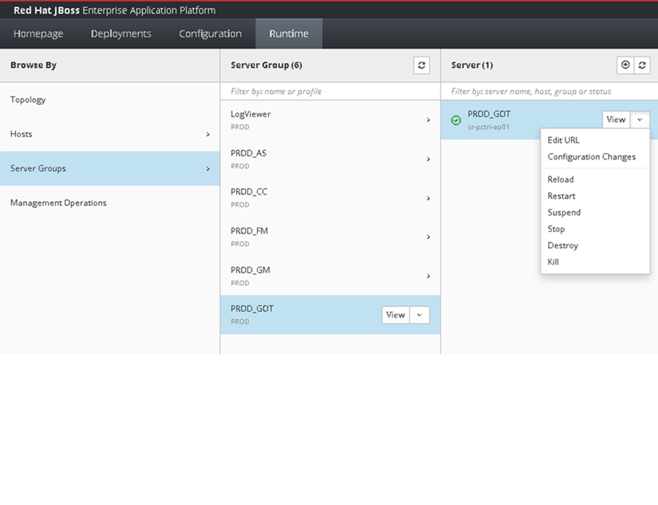

Progreso del despliegue
0%
1
2
3
4
5
6
7
8
9
10
11
Acceso a la Consola JBoss
- Abrir navegador: Utilice Chrome, Firefox o Edge para obtener la mejor experiencia
-
Acceder a la URL: Copie y pegue la siguiente dirección en la barra de direcciones
http://sr-pctrl-ap01.corp.cablevision.com.ar:9990/console/index.html
- Autenticación: Ingrese las credenciales proporcionadas por el administrador del sistema

Pantalla de autenticación de JBoss Admin Console
Panel Principal
- Dashboard principal: Una vez autenticado, verá el panel de control principal de JBoss
- Navegación: Familiarícese con la barra de menú superior y el panel lateral izquierdo
- Estado del sistema: Observe los indicadores de estado de los servidores
Panel de control principal mostrando el estado de los server groups
Navegación a Runtime
- Pestaña Runtime: Haga clic en la pestaña 'Runtime' en la barra de navegación superior
- Server Groups: En el panel lateral izquierdo, seleccione 'Server Groups'
- Vista de grupos: Se mostrará la lista completa de grupos de servidores disponibles

Vista de Server Groups en la sección Runtime
Detener Server Group
- Seleccionar grupo: Identifique y seleccione el server group correspondiente
- Menú de acciones: Haga clic en la flecha desplegable ▼ del server group
- Detener servicio: Seleccione la opción 'Stop' del menú desplegable
- Esperar confirmación: Aguarde hasta que el estado cambie a "Stopped"

Menú desplegable para detener el server group
Acceso a Deployments
- Pestaña Deployments: Haga clic en la pestaña 'Deployments'
- Vista de despliegues: Se mostrará la lista de archivos WAR desplegados
- Estado de los WAR: Observe los iconos: verde (activo), gris (inactivo)

Vista de Deployments mostrando archivos WAR
Deshabilitar WAR Anterior
- Localizar WAR actual: Busque el archivo WAR de la versión actual
- Seleccionar archivo: Haga clic en el nombre del archivo WAR
- Deshabilitar: Haga clic en el botón 'Disable'
- Confirmar acción: Confirme la deshabilitación
Proceso de deshabilitación del WAR actual
Subir Nuevo WAR
- Nuevo deployment: Haga clic en el botón 'Add Deployment'
- Tipo de carga: Seleccione 'Upload a new deployment'
- Seleccionar archivo: Haga clic en 'Browse' para seleccionar el WAR
- Verificar archivo: Asegúrese de seleccionar la versión correcta

Diálogo para subir nuevo archivo WAR
Seleccionar Archivo WAR
- Navegador de archivos: Se abrirá el explorador del sistema
- Ubicar archivo: S:\Publico\jbossprod
- Verificar versión: Computer ==> Compartidos ==> arriba a la derecha buscamos jbossprod
- Seleccionar: Haga clic en el archivo y luego en 'Abrir'
Explorador de archivos del sistema
Confirmar Carga del WAR
- Revisar detalles: Verifique el nombre y tamaño del archivo
- Configuración: Mantenga las configuraciones por defecto
- Iniciar carga: Haga clic en 'Next' para comenzar la transferencia
- Monitorear progreso: Observe la barra de progreso
Confirmación de carga con barra de progreso
Iniciar Server Group
- Volver a Runtime: Regrese a 'Runtime' > 'Server Groups'
- Localizar grupo: Busque el server group que detuvo
- Menú de acciones: Haga clic en la flecha desplegable ▼
- Iniciar servicio: Seleccione 'Start' del menú
- Esperar confirmación: Aguarde hasta que cambie a "Running"
Reiniciando el server group
Validación Final
- Verificar estado: Confirme que el server group esté "Running"
- Verificar deployment: Confirme que el nuevo WAR esté "Enabled"
- Prueba funcional: Acceda a la aplicación para verificar funcionamiento
- Documentar cambios: Registre la versión desplegada y la fecha
Estado final exitoso - servidor ejecutándose y nuevo WAR activo
Checklist de Validación
Procedimiento de Rollback
En caso de problemas, siga estos pasos para volver a la versión anterior:
- Paso 4: Detener el server group afectado
- Paso 6: Deshabilitar el nuevo WAR problemático
- ⚠️ Activar WAR anterior: NO subir nuevo archivo. Seleccione el WAR anterior que ya está desplegado pero deshabilitado y haga clic en "Enable"
- Paso 10: Reiniciar el server group
- Paso 11: Verificar funcionamiento con versión anterior
- Documentar: Registrar el incidente y las acciones tomadas
⚠️ Importante: El rollback NO requiere subir un nuevo archivo WAR. Simplemente reactive el WAR anterior que ya existe en el sistema.